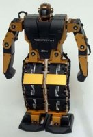

Ajax Gallery Offline With Gears, The Demo
This page is powered by Gears scripts. The image may be viewed even without Internet connection.
Move the mouse over the image to see them full size...

Return to the tutorial: Ajax offline with Gears
Links to the sites of the robots makers are given in the tutorial.